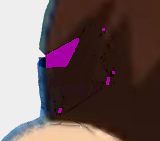
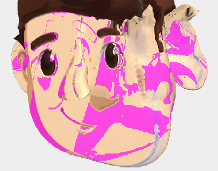
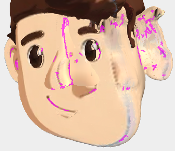
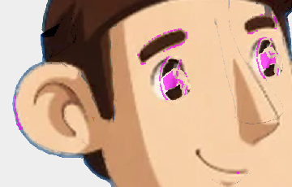
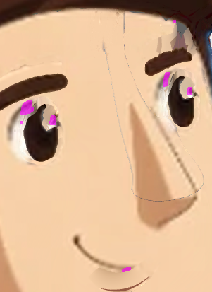

| blackpix | 19.92 | px per 10k skin | emote_nod |  | |
| symmetry | 0.13 | mean |mirror diff| /255 | rest_q3L |  | |
| seams | 123 | line px per 10k skin | rest_q3L |  | |
| lidcover | 24.86 | dE lid vs skin | blinkclosed_front | dL -1.3 (lid minus skin), dE 9.6, eye still visible 48% |  |
| ghosts | 35.66 | % of vacated feature px not skin-coloured | emote_angry | eyes ghost in emote_angry: 36% of 659px |  |
| framing | 10.60 | centre off %·1 + |ln scale|·50 + 5 if cropped | emote_laugh | bbox c(363,554) h514; centre off 2.7%, scale x1.04 of base; eyes off 2.7%, span x1.02, cropped px 138 | |
| edges83 | 56.73 | % edge px with halo/fringe | rest_front | 83px: aa coverage 0.90 partial/boundary, halo 56.7% of 208 edge px |